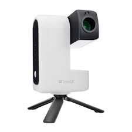
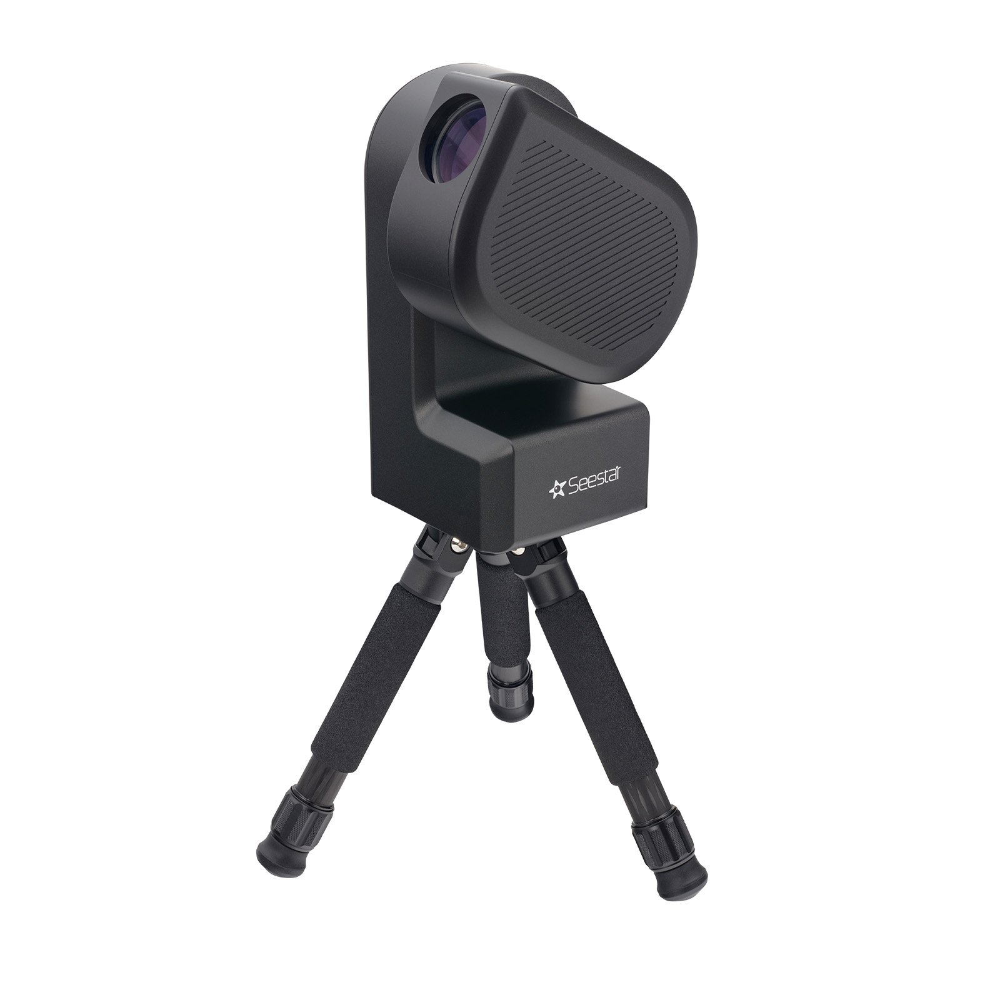
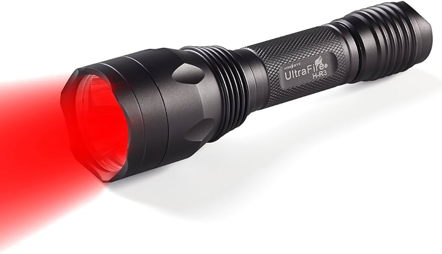

The SeeStar S30 is an amazing smart telescope which can be controlled from you phone!
The SeeStar S50 is an incredible update from the S30. The S50 is more designed for detail on tighter shots.
Some kind of way of navigating the sky: For example,an app or website such as Stellarium, or a traditional planisphere.

Plus a Red Torch or torch with a red filter can really come in handy for preserving night vision while stargazing.
